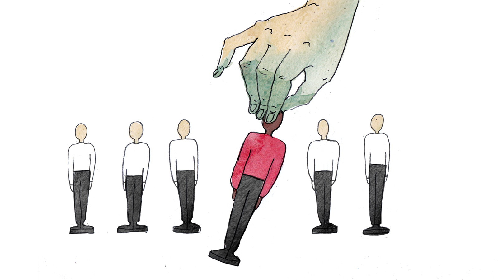
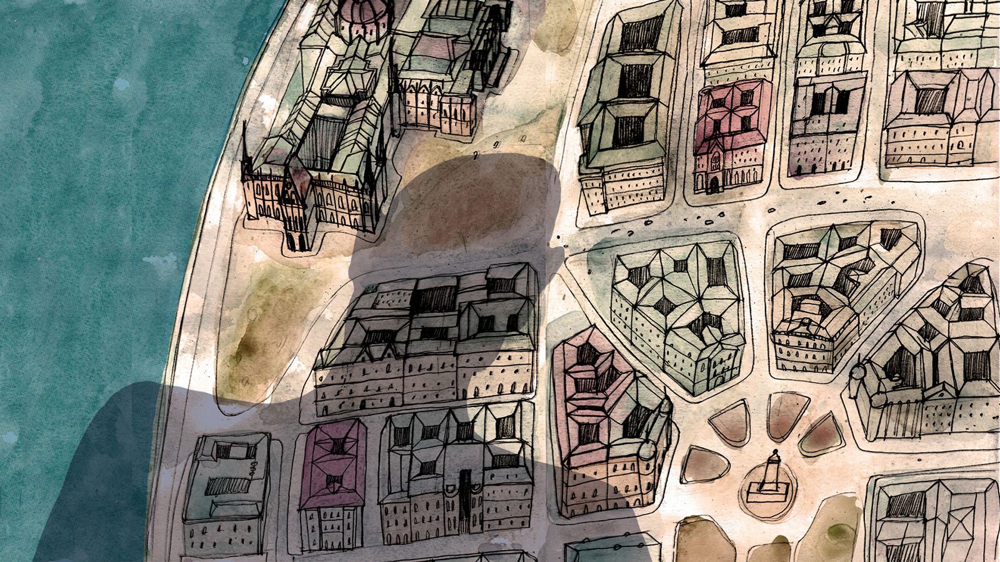
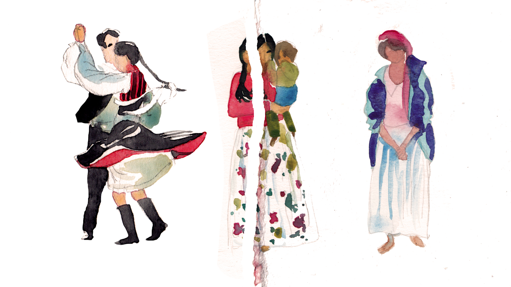

Інтэрв’ю Яраслава Віала з Гашпарам М. Тамашам (Tamás Gáspár Miklós), венгерскім грамадска-палітычным дзеячам, былым дысыдэнтам, адным з самых вядомых левых фiлосафаў Венгрыі.
Вы пісалі пра постфашызм. У апошнія гады ўсё больш распаўсюджваюцца нацыяналісцкія і расісцкія сілы па ўсёй Еўропе. Як Вы патлумачыце гэты феномен?
Увесь свет еўрапейскай палітыкі змяніўся пасля 1989 года: два гегемонавыя блокі раз’ядналіся, пасля таго як савецкая пагроза, што выклікала ўнутраны кампраміс на Захадзе — вынікам якога паўставала сацыяльная дзяржава і талерантнасць паміж вялікімі заходнееўрапейскімі камуністычнымі партыямі і камуністычна накіраванымі гандлёвымі саюзамі — спыніла існаванне. Знік і заходні ціск, які ўсталёўваў пэўныя абмежаванні на сталінскую і постсталінскую дыктатуры. Раўнавага Халоднай вайны была страчаная. Больш ці менш «пралетарскія» супраць-сілы разам з «процілеглымі культурамі» ад марксізму да авангарду зніклі таксама. Сompromesso storicoз іт. «Гістарычны кампраміс» — ключ да квітнення Еўропы з 1960-х па 1980-я гады — апынуўся і непатрэбным, і немагчымым. Новыя дзяржавы і іх «эліты» мусілі ўсвядоміць, што састарэлыя рэлігія і нацыяналізм больш не эфектыўныя, іх фонды разваліліся, армія і царква ўжо не такія моцныя, як некалі. У рэшце рэшт, сацыяльная інтэграцыя і масавая мабілізацыя зараз не прамыя, але прапушчаныя праз медыя. Пачуццё інтэграцыі для пасіўных і ізаляваных грамадзян можна дасягнуць толькі праз палітычныя страсці, якія наўпрост — без арганізацыі і ідэалагічных мэтаў — надзвычай негатыўна ўплываюць на людзей. Таму тлумачэнні для сацыяльнай незадаволенасці можна ўспрымаць пераважна як вынік «гетэрагенных» элементаў (у разуменні Жоржа Батая), «аўтсайдэраў», «іншаземцаў», «мігрантаў», «геяў», няўдзельнікаў (сацыяльных ашуканцаў, лайдакоў, ніжэйшага класу ўвогуле). Гэта не патрабуе масавай мабілізацыі як у «класічным» фашызме, таму што сюды не ўваходзяць кіруючы клас ці дзяржаўныя эліты, у той час як у фашызм ці нацыянальны сацыялізм, вядома, уваходзяць. Гэта аўтарытарны радыкалізм, які базуецца не на нянавісці, а на пагардзе. Гіперактыўная пасіўнасць старога фашызму распачынае шлях пасіўнай пасіўнасці постфашызму.
Новая нацыянальная ідэнтычнасць венграў карэніцца ў футболе, знявазе інтэлектуалаў і агульнай нянавісці да ўсіх іншаземцаў
Давайце сфакусуемся на Вугоршчыне. Выбары паказалі аднаўленне праванакіраванага экстрэмісцкага зруху. Што адбываецца з краінай?
Гэта складанае пытанне — і самае галоўнае. Па-першае, гэта былі чарговыя выбары, дзе спаборнічалі сапраўднае правае крыло і псеўдалевыя партыі. «Левая» кааліцыя камбінавала элементы ліберальных чалавечых правоў, праеўрапейскага бізнэс-лібералізму і вельмі вульгарнага «левага» папулізму з відавочна нерэалістычнымі абяцаннямі. Гэтыя элементы дрэнна спалучаліся разам. Віктар ОрбанВенгерскі палітык, прэм'ер-міністр краіны ў 1998-2002 гг. і з 2010 года. Старшыня партыі «Фідэш» (Альянс маладых дэмакратаў), якая мае 263 месцы ў парламенце. (Viktor Orbán) і яго нацыянальныя кансерватары папросту адмовіліся прадстаўляць праграму ці выбарны маніфест. Іх слоган быў: «Мы працягнем!». Іх палітыка: спалучэнне падачак для сярэдняга і толькі для сярэдняга класу і даволі агрэсіўны падыход «закон і парадак» супраць усіх астатніх. Гэта нескладаная і простанакіраваная палітыка рэпрэсій: цэнзура ў медыя, якая называецца «нацыянальнай еднасцю» (што значыць «не слухаць іншадумца»), моцная шавіністычная нацыянальная адукацыя на ўсіх узроўнях, культ «цяжкай працы», які пераследуе беспрацоўе, асабліва бедных цыган, маскулінныя аповеды пра волю, сілу, дэтэрмінізм, дзеянне, «накіраванасць-за-лідэрам», мужнасць. Новая нацыянальная ідэнтычнасць карэніцца ў футболе і базуецца на крайніх правых групах футбольных заўзятараў, знявазе інтэлектуалаў і агульнай нянавісці да ўсіх іншаземцаў (як да ўласных суседзяў у «дзяржавах-правапераемніцах», так і да падступнага, загніваючага Захаду, не кажучы ўжо пра каляровых братоў). Левыя былі прадстаўленыя — кіруючыся старога рэцэпта — як агенты «замежжа», le parti de l’étranger. У той жа час кіруючая партыя згубіла сотні тысяч галасоў, якія часткова адышлі да відавочных фашыстаў. Незадаволеныя проста пакідалі краіну натоўпамі. Лондан сёння — трэці па памеры вугорскі горад. Агульны настрой — панурасць, тут пануе атмасфера падазрэння і нянавісці. Ёсць ксенафобія і этніцызм без ніякага адцення нацыянальнага гонару.
Як бы Вы апісалі Віктара Орбана і яго партыю «Фідэш» (Fidesz)? Да 1989 года Вы былі сябрамі…
Насамрэч, мы сябравалі да сярэдзіны 1990-х. Спадар Орбан вельмі здольны, бязлітасны, цалкам беспрынцыпны і прагматычны палітык, хітры тактык і бессаромны дэмагог. Ён заўжды супярэчыць сабе і сцвярджае супрацьлеглае таму, што ён трубіў на мінулым тыдні, але паколькі не дае інтэрв’ю і ніколі не падвяргаецца крытыцы, не кажучы ўжо пра «варожае апытанне» (новыя ўнутраныя правілы парламента робяць яго амаль пазбаўленым любога абавязку дэбаціраваць і пераконваць), ён не лічыцца ні з чым. Не было ніводных тэледэбатаў паміж «Фідэшам» і апазіцыяй. Ягоная рыторыка жорстка спрошчаная: яго змаганне з касмапалітычнымі сіламі міжнародных фінансаў і міжнародным левым аддзяленнем захавання нацыянальнай бяспекі нівэлюе кошт жыцця і вяртае Вугоршчыне яе спадчынную моц — ну, вы ведаеце: адважны маленькі Давід змагаецца з Галіяфам і гэтак далей. Самы люты вораг можа быць апазнаны па ягоным ці ейным абвінавачванні нацыянальнага кансерватыўнага вугорскага ўраду ў антысемітызме, якога насамрэч не існуе, бо гэта толькі злосныя габрэйскія выдумкі.
Чаму «Фідэш» такі папулярны?
Здаецца, што гэтая партыя прысвоіла шмат антыкапіталістычных элементаў. Як правіла гэта гучыць так: калі вы супраць сацыяльна-эканамічнай сістэмы, галасуйце за нас. Гэта звычайнае правае крыло антыкапіталістаў 1930-х гадоў: у гэтым палягае рознасць паміж вытворчым і паразітычным капіталамі. Спадар Орбан заключае адмысловыя пагадненні з заходнімі індустрыяльнымі кампаніямі, якія цалкам ці часткова пазбаўленыя ад падаткаў і прывабленыя неверагодна нізкімі вугорскімі заробкамі, але аб’яўляе вайну банкам і глабальным фінансавым інстытуцыям, такім як, напрыклад, МВФ. Дэкаратыўная рэстаўрацыя Будапешта (безгустоўная, я б дадаў) аплочвалася ЕС, антывугорскім монстрам. Спадар Орбан, як і шматлікія яго папярэднікі, з’яўляецца чэмпіёнам нацыянальнай буржуазіі, ён зараз вельмі багаты чалавек. Як радыкальныя правыя паўсюль, «Фідэш» апазіцыйны да тых, каго лічыць «непрадуктыўнымі»: банкіраў, інтэлектуалаў, беспрацоўных, пенсіянераў, студэнтаў. «Непрадуктыўны» значыць «паразітычны», значыць «падрыўны». З іх амбівалентнай, напаўантыкапіталістычнай гутаркі вынікае, што яны здолелі стаць сістэмай і апазіцыяй да сістэмы. Паколькі ў асноўным галасуе сярэдні клас, існуе каля двух мільёнаў чалавек, якія падвергнуцца прапагандзе, вельмі ўмела створанай фідэшаўскімі PR- і выхавальнымі машынамі (камбінацыя Тэтчэрызму і Пуцінізму) і падмацаванай Орбанавай няспыннай актыўнасцю і працяглымі ініцыятывамі з любой нагоды. Але людзі пачынаюць непакоіцца. Спадар Орбан набыў тыранічныя рысы безадказнасці, якая можа выбухнуць у любы момант. (Ён, быццам, верыць, што сапраўды кіруе Трансільваніяй і Ваяводзінай, мудрагелісты СекейскіСекейскі край — непрызнаная нацыянальна-тэрытарыяльная аўтаномія венгерскай меншасці на тэрыторыі Румыніі — секеяў. Насельніцтва складае каля 700 тыс. чалавек. сцяг лунае над будынкам Будапешцкага парламента, а прадстаўнікі вугорскага ўраду праводзяць асамблеі і ўдзельнічаюць у публічных цырымоніях у Румыніі, нават не адплачваючы мясцовым уладам ветлівымі званкамі. Афіцыйны тэрмін — «уз’яднанне нацыі па-за межамі». Гэта нонсэнс, але вельмі небяспечны нонсэнс).

Ці заўважны антыкамуністычны ўплыў? Калі так, якім чынам вугорскія правыя яго выкарыстоўваюць?
Гэта старая формула крайніх правых: камунізм і лібералізм — ідэнтычныя. Гэта выдумкі бескарэнных, мізантрапічных, загадкавых колаў, накіраваных супраць чалавечай прыроды і прыроднага парадку. «Мы», сапраўдныя вугорцы, — кансерватыўныя прагматыкі, зацікаўленыя толькі ў асабістых інтарэсах, вызначаных цвярозым позіркам на нашых людзей і на нашую родную краіну. Мы не ідэолагі, мы шукаем простыя рэчы, такія як годнасць, гонар, дабрабыт, простае, але камфортнае жыццё, і мы шануем традыцыі, незалежна ад таго, каралеўскія яны ці сялянскія. І гэтак далей. І зразумела, хаця гэта толькі і прапаноўваецца, а не сцвярджаецца, што і камуністычны, і лібералістычны дыскурсы носяць лёгкі семіцкі акцэнт.
Выбары паказалі рост падтрымкі расісцкай, антысеміцкай партыі «Йоббік»Ультраправая нацыяналістычная партыя, трэцяя па памеры палітычная партыя Венгрыі. На выбарах у парламент у 2014 годзе атрымала 20,54% галасоў. (Jobbik). Яна сапраўды мае шмат прыхільнікаў сярод моладзі? Чаму?
Моц «Йоббіка» ў яе несентыментальнай, чыстай нянавісці да цыганаў і ў адкрытым жаданні бачыць іх загнанымі ці, лепей, выгнанымі. Гэта заснавана на маральнай паніцы, як і стары антычорны расізм даваеннага амерыканскага Поўдня: злачынствы, хуткае памнажэнне чуллівых і сэксуальна заклапочаных дзікуноў і г.д. Таксама здаецца, што моладзь сярэдняга класу са сваёй антыпадпарадкавальнай пазіцыі ўспрымае гісторыю з пункту гледжання цэнтральнай восі X, адмаўляючы ўсе дэмакратычныя стэрэатыпы і не паважаючы абавязковыя добрыя манеры ў палітыцы паміж, скажам, 1945-м і 2000-м гадамі. Гэта выглядае мяцежна і арыгінальна. Яны выкарыстоўваюць сімвалы старой партыі «Скрыжаваныя стрэлы», якую ненавідзелі і якой пагарджалі нават больш мэйнстрымавыя фашысцкія тэндэнцыі, і якая была вядомая сваёй бязглуздай жорсткасцю. Гэта ультыматыўнае непаліткарэктнае сцверджанне.
Як дзейнічае «Йоббік»? Ці падобныя яны на грэчаскі «Залаты світанак» (Хрісі Авгі) (напрыклад, арганізацыяй «бунтарскай паліцыі», народнага апалчэння, паслуг для бедных і т. п.)?
Для бедных яны не робяць нічога, акрамя як абяцаюць, што пазбавяцца ад цыганаў, але яны даволі падобныя ў метадах да «Залатога світанку». Серыйнае забойства шасці цыган, ажыццяўлённае крайнімі правымі міліцыянтамі, якія зараз арыштаваныя, не выклікала вялікай агіды. Наадварот, з’явіліся спекуляцыі на тэму таго, што жыда-бальшавіцкія і жыда-ліберальныя загаворшчыкі арганізавалі забойствы, каб абылгаць нашых людзей. У такіх умовах «Йоббік» не мае цяжкой працы. Пасля выбараў левацэнтрысцкія партыі прапанавалі «канструктыўны дыялог» ці «дэбаты» з «Йоббікам». Фашысцкая партыя не можа ўтрымлівацца ў зоне карантыну, аб’яўляючы лідэрства Вугорскай сацыялістычнай партыі. У нацыянальных выбарах фашысты былі на другім месцы, цяпер прагназуюць, што на выбарах у Еўрапейскі парламент яны займуць другую пазіцыю. На мясцовых выбарах гэтай восенню яны могуць дасягнуць 70-80 мэрый у правінцыях, як кажуць сацыёлагі. У новым Вугорскім парламенце спецыяльную камісію па пытаннях культуры і адукацыі будзе ачольваць фашыст.
Дэмакратыя смешыць людзей, і я мушу прызнацца, я абсалютна іх разумею.
У Вугоршчыне існуе шмат нянавісці да цыган. Ці ёсць актывісты, якія абараняюць іх? Ці грамадзянская супольнасць збольшага слабая і пасіўная?
Зразумела, такія групы ёсць, але яны неверагодна непапулярныя. Грамадзянская супольнасць не цалкам пасіўная, а папросту не антырасісцкая. Гэта можа змяніцца, але сёння нават левацэнтрысты адмовіліся ад гэтай тэмы і пачалі гаварыць пра «грамадскую бяспеку ў сельскай мясцовасці», што можна перакласці як «цыганскія злачынствы».
А што наконт вугорскіх левых? Чаму яны не здолелі атрымаць падтрымку?
Акрамя таго, што яны няўмелыя, ненатхнёныя, падзеленыя і труслівыя, левацэнтрысты яшчэ і не маюць доступу да галоўных медыя (інтэрнэтам карыстаецца толькі малады сярэдні клас, трывала правы) і не могуць прадставіць свае альтэрнатывы. Яны выступаюць з млявай кампаніяй у стылі «амаль тое ж самае, але лепей», да таго ж яны загразлі ў некаторых насамрэч агідных карупцыйных справах. Іх слоганы, якія хвалілі дэмакратыю, былі неэфектыўнымі, бо «дэмакратыя» значыць для большасці людзей збядненне, замежны ўплыў, няроўнасць, недабрасумленныя практыкі наймання на працу — адным словам, няўдачы. Дэмакратыя смешыць людзей, і я мушу прызнацца, я абсалютна іх разумею.

Разглядаючы траекторыю развіцця посткамуністычных краін пасля 1989 года, можна заўважыць, што большасць з іх знаходзіцца ў цяжкім стане. Што пайшло не так?
Мы ўсе перадкамуністычныя краіны. Але акрамя гэтага, Усходняя Еўропа — як і ўвесь свет — у цяжкім стане. Капіталізм, як мы ведаем, ахоплены крызісам, але старыя суцяшэнні больш не працуюць. Парламентарызм і «свабодная прэса» пустыя нават там, дзе сістэма ставіцца да іх больш талерантна, чым у Вугоршчыне. Левы ліберальны рэцэпт пераразмеркавання пазбаўляецца сэнсу расізмам, ксенафобіяй, мізагініяй і падобным. Беднасць зараз на піке, але роўнасць усе ненавідзяць. Антыкапіталізм таксама вяртаецца да сваёй перадмарскісцкай маралістычнай, часта бессэнсоўнай формы. Радыкальная крытычная думка вагаецца ў пустой прасторы, паколькі стары рух працуючых памёр. Замену індустрыяльнаму пралетарыяту наўрадці магчыма знайсці.
Ці бачыце Вы хоць нейкае святло ў канцы тунэля? Ці мы рушым наўпрост да большай эксплуатацыі, аўтарытарызму і новых форм фашызму?
У мяне ёсць вялікая спакуса сказаць «так». Але сказаць гэта — значыць, што нам трэба перастаць думаць і адчуваць, а я не гатовы прапаноўваць штосьці падобнае. Цёмныя стагоддзі ўжо мінулі. Наша мэта — трымаць нашыя маленькія вагеньчыкі жывымі і выконваць наш абавязак, нягледзячы на няўдачы і магчымыя наступствы. Працягласць традыцыі апазіцыйнасці да эксплуатацыі і прыгнёту жыццёва неабходная, нават калі мы толькі звёны аднаго ланцугу, і будзем — верагодна, і па заслугах — забытыя лепшым пакаленнем, якое мусіць ці не мусіць з’явіцца.
Вы кажаце, што пачуццё сацыяльнай інтэграцыі можна выклікаць палітычнымі страсцямі, якія перажываюцца прыватна. Ці лічыце Вы, што гэта можа быць дасягнута толькі праз новыя ксенафобіі? Ёсць якія-небудзь лепшыя за ксенафобіі палітычныя страсці, якія мы можам прапанаваць пасіўнымі грамадзянам сёння?
Да сацыяльнай інтэграцыі можна прыйсці і іншым шляхам. Часам можна выкарыстоўваць лепшыя за ксенафобіі спосабы зацікавіць. Да таго ж сапраўдная сацыяльная незадаволенасць можа быць выказаная рознымі версіямі «маральнай панікі», але гэтыя версіі не будуць мець сэнсу, як і не змогуць быць устойлівымі, як могуць розныя рухі (якія базуюцца, у рэшце рэшт, на асабістым, надзённым, фізічным, часовым яднанні і на агульных ідэалах).

Ці можаце Вы распавесці крыху больш пра адрозненні паміж «класічным» і новым фашызмам? Ці ёсць нейкія іншыя кантрасты ці падабенствы?
«Класічныя» фашысцкія рухі ва ўсіх сваіх варыяцыях былі рухамі ваенных ветэранаў, салдатаў, з ваеннымі ідэямі лідэрства, накірунку і мабілізацыі. Але часы масавых армій скончыліся. Больш істотна, што фашызм з’явіўся на фоне калапсу старога рэжыму і быў рэакцыяй на сацыялізм, універсалісцкія і радыкальныя пралетарскія рэвалюцыі. Увесь гэты кантэкст знік разам з паразай восі X у 1945 годзе, разам з ураўнаважанасцю халоднай вайны і яе сконам, дэкаланізацыяй і канцом савецкай сістэмы ў 1989 годзе. Што засталося акрамя настальгіі па самаму дрэннаму, дык гэта няздольнасць позняга капіталізму інтэграваць «гетэрагеннасць». Фундаментальная ідэя сучаснасці — грамадская роўнасць з дапамогай рэпрэзентацыі і грамадскія гарантыі для прыватнага жыцця — становіцца ўсё больш неймавернай, робіцца сведкам антыміграцыйнай палітыкі найбольш «паважаных» заходніх урадаў. Прасцей кажучы, канцэптуальная «моц», неабходная для ўяўлення супольнасці, якая НЕ базуецца на этнічнасці ці на агульным інтарэсе, які вызначаны вузка, знікае.
Вы таксама казалі, што ўсе мы з’яўляемся «перадкамуністычнымі» краінамі. Што гэта значыць (напрыклад, спалучэнне рэакцыянісцкай палітыкі, баязлівых і маралістычных левых ці іншыя рэчы)?
Так, канешне, паколькі камунізму яшчэ не было — у лепшым выпадку, эгалітарны стан капіталізму з невялікай колькасцю цывілізацыйных дасягненняў, акрамя сухотаў, пранцаў, масавых галадовак і смерці ад пераахаладжэння, — мы ўсе з’яўляемся перадкамуністамі, нават калі камунізму ніколі не будзе. Я не лічу, што неаспрэчныя маральныя няўдачы і грахі сучасных левых у нейкім сэнсе вызначальныя, тым не менш, яны расчароўваюць і засмучаюць. Гэта, пэўна, толькі наступствы. Цяпер няма «аўтсайду» капіталізму, як тое было ў часы Розы Люксембург і Леніна. (У іх выпадку, гэта былі вялізныя сялянскія супольнасці, каланіяльныя ды не. Цяпер няма нават такога рэвалюцыйнага «аўтсайду»). Які тып «процілеглай культуры» можа трымацца жывым у адсутнасці сапраўднага ворага? Нашыя маленькія марксісцкія ці анархісцкія гурмы выказваюць унутранае супрацьстаянне з познім капіталізмам, але больш няма нічога за межамі уніфікаванай лініі гарызонту сістэмы. Упершыню марксісцкая тэорыя існуе — насамрэч, ёсць шэраг цудоўных прац і ініцыятыў — без марксісцкага руху. У ХІХ ст. былі сацыялісты, моцна крытыкаваныя Леніным і Троцкім, якія лічылі свае працы проста падрыхтоўкай да крызісу, які будзе створаны гісторыяй, а не іх уласнай актыўнасцю. Гэта было чаканне рэальнасці, каб ствараць магчымасць вызвалення і эмансіпацыі. Ні меншавікі, ні бальшавікі не былі дакладна правымі. Гэта перыяд «пасля гісторыі», калі мы маем на ўвазе сучасную гісторыю, народжаную праблемамі буржуазнага грамадства. Гэтыя праблемы часам вырашаюцца дэкадансам і састарэннем, а не чымсьці іншым, але яны з большага застаюцца невырашанымі. Сучасныя рэакцыянісцкія палітычныя трэнды і неліберальныя рэжымы выказваюць незадаволенасць, але, натуральна, толькі робяць горш. Гэта той выпадак, калі падзеі самі ўказваюць нам, на што звярнуць увагу, каб знайшлося рашэнне.